Principal bedroom
King bed, soft linens and a quiet place to recharge.
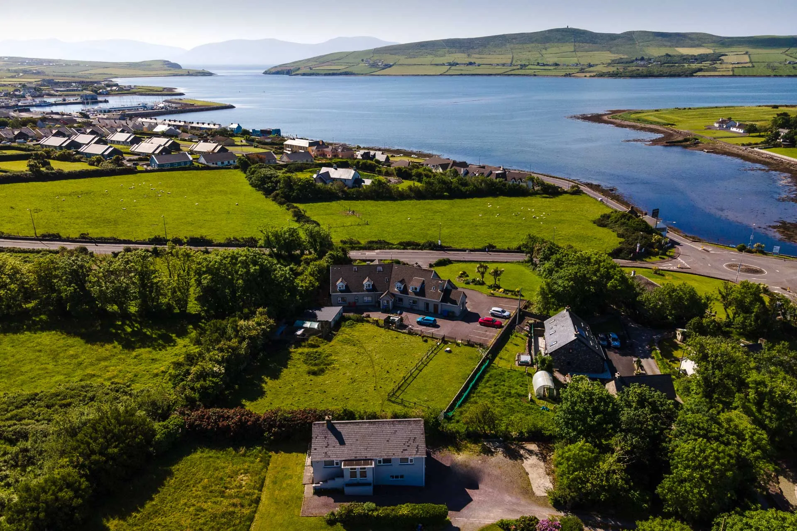
A private retreat on the Dingle Peninsula
A beautifully renovated four-bedroom cottage for families and friends, surrounded by sea air, mountain views and the quiet of West Kerry.
Check availabilityBook direct
Live availability, secure checkout and direct booking powered by Lodgify.
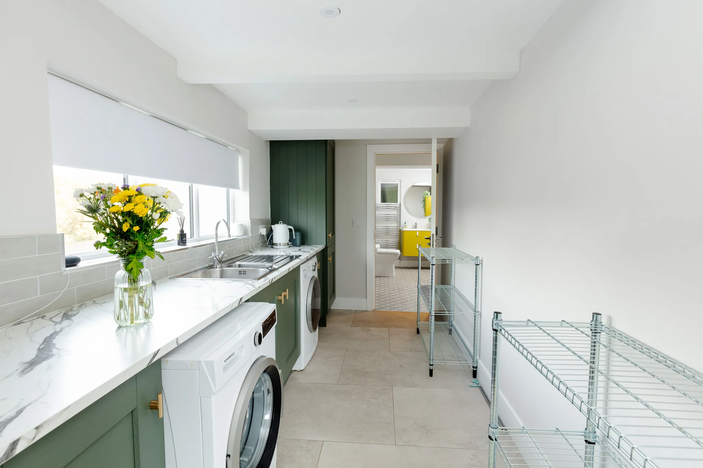
The cottage
Hidden from the road in a peaceful setting, Milltown Cottage combines the comfort of a modern family home with the wild beauty of the Dingle Peninsula.
Gather around the kitchen table, unwind in the generous living spaces, or step outside into the private garden and take in the changing Kerry light. Dingle’s pubs, restaurants, harbour and colourful streets are close by, while the cottage remains calm and secluded.
Sleep well
King bed, soft linens and a quiet place to recharge.
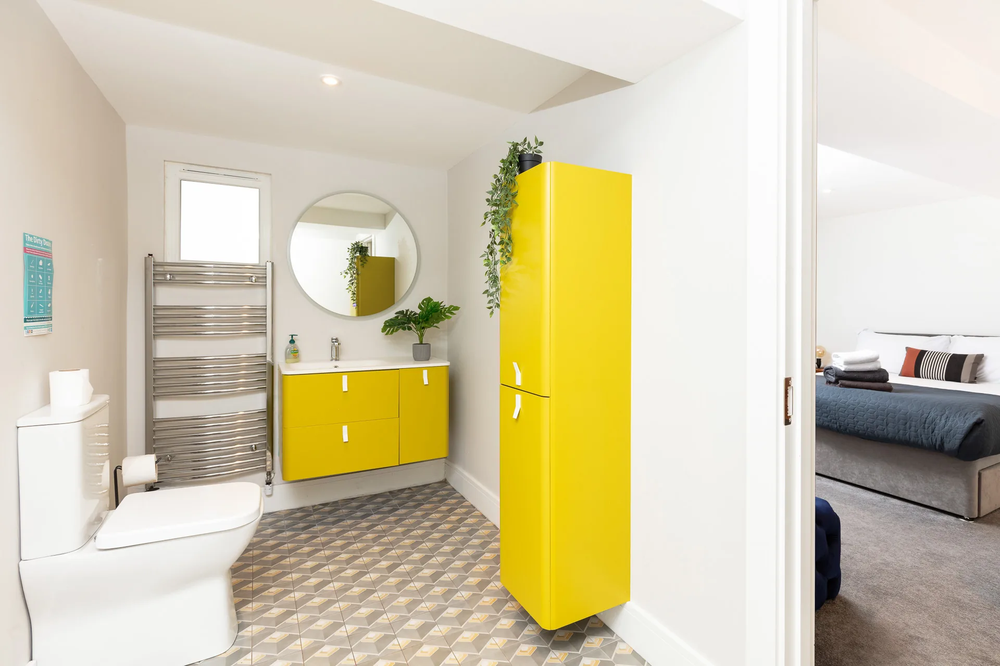
A warm, thoughtfully styled room for two.
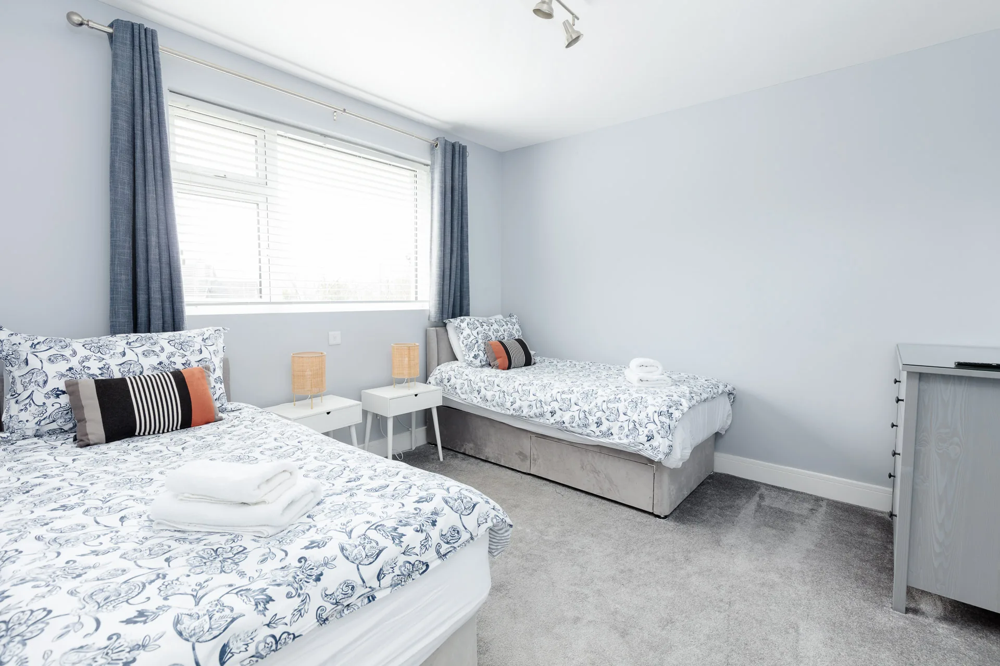
Flexible sleeping space for children, friends or extended family.
Gallery
A closer look at the rooms, details, gardens and panoramic setting that make Milltown Cottage such a special base in Dingle.

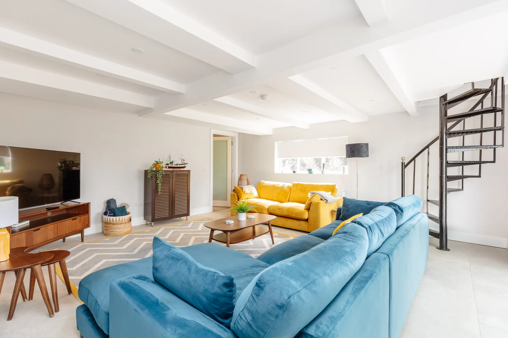
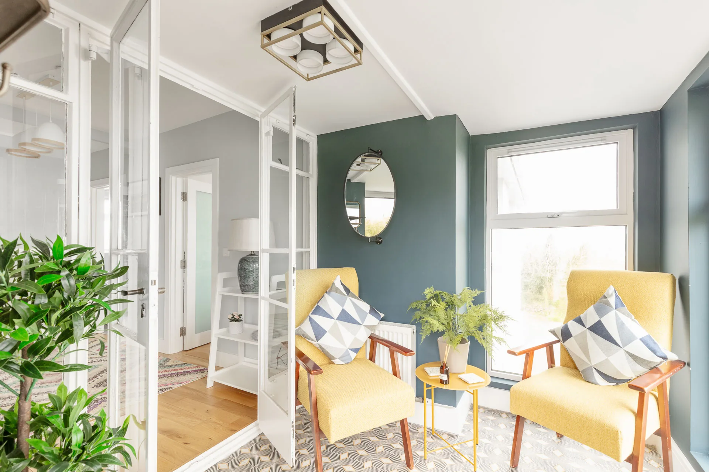

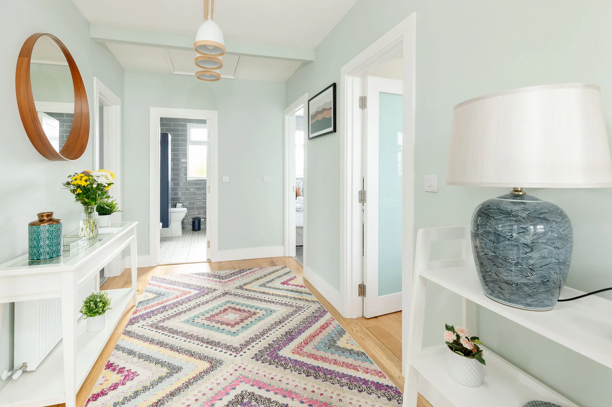


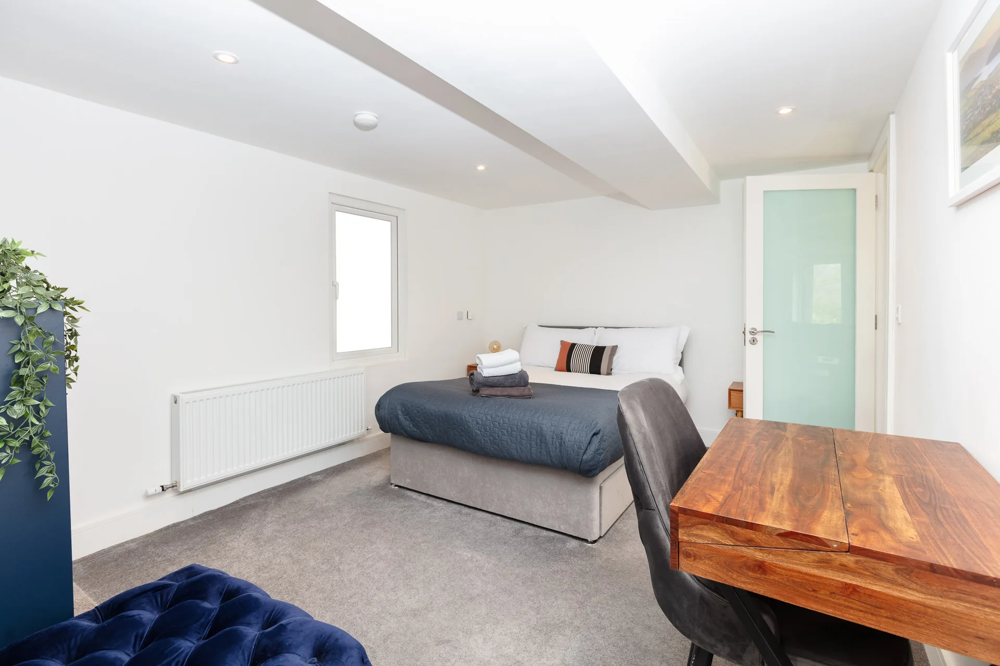

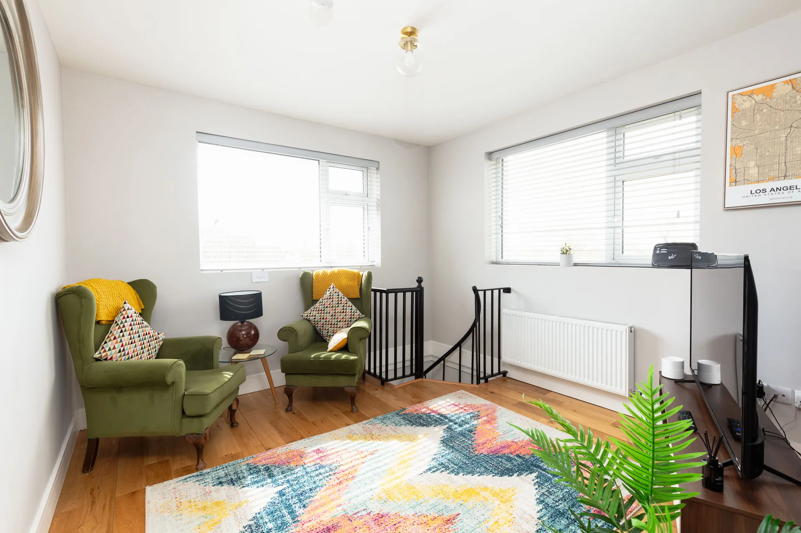
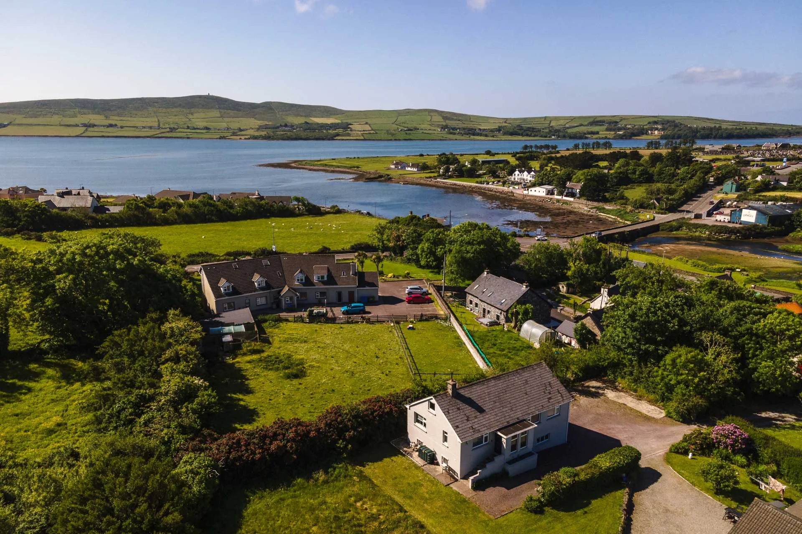
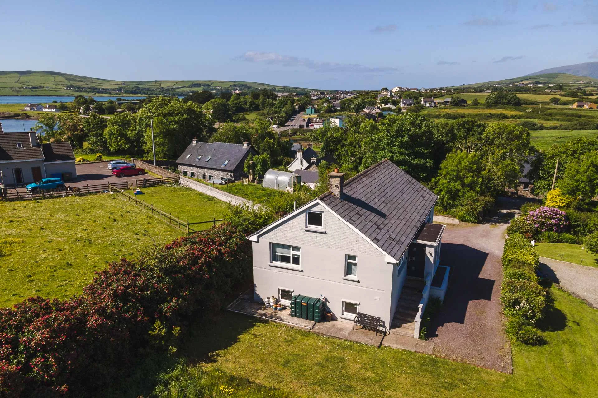

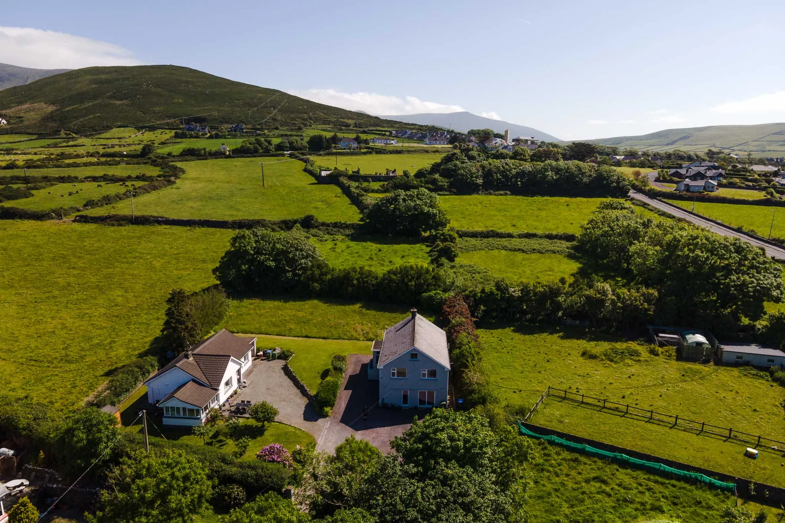
Explore Dingle
Spend the morning browsing Dingle’s independent shops, settle in for seafood by the harbour, then head west toward Ventry, Slea Head and the Blasket Islands. From traditional music to Atlantic beaches, the best of the peninsula is within easy reach.

“Beautifully designed, very close to town and wonderfully quiet.”
“Everything we needed was there. Comfortable, spacious and perfect for our group.”
“A serene setting, fantastic views and an ideal base for exploring the peninsula.”
Your Dingle stay starts here